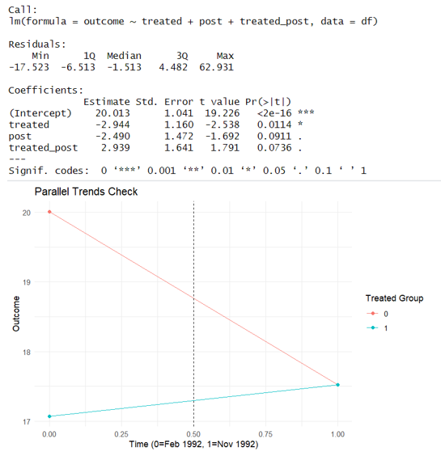

DID, also called Diference in Differences. It's a popular method widely be used in economics and social study.the biggest highlight is the ability to eliminate the influence of time trend and difference between groups find causal relationship.
The most famous case of DID is obviously the Study on Minimum wage in New Jersey and Pennsylvania(Card & Krueger (1994) ). We will demonstrate based on the results of this study 。All the code will be runned in R 4.4.
panelView visualizes panel data. It has three main functionalities:
1. it plots treatment status and missing values in a panel dataset; 2.
it plots the temporal dynamics of an outcome variable (or any variable)
in a panel dataset;
3. it visualizes bivariate relationships of two variables by unit or in
aggregate.
Attention: When using this package, please download the new version of R
tools, and make sure the function is like: panelview(outcome ~
treatment_status, ), the"v"The v must be lowercase, otherwise it may not
work properly. To download or for more information, please visit the
website:
https://yiqingxu.org/packages/panelview/
# Load required packages
library(tidyverse)
library(haven)
library(fixest)
library(ggplot2)
library(panelView)
# Load the data
df <- read_dta("https://github.com/quarcs-lab/data-open/raw/master/other/cardkrueger1994v2.dta")
# Data treatment
df <- df %>%
mutate(
treated = as.numeric(treatment_group), # (1 = treated, 0 = none)
post = as.numeric(time == 1), # (1 = Nov, 1992, 0 = Feb, 1992)
treated_post = treated * post # Interaction term for DID
)
# Panel view for treatment effect visualization
panelview(outcome ~ treatment_status, data = df,
index = c("id", "time"),
xlab = "time",
ylab = "unit",
type = "treat",
pre.post = TRUE,
by.timing = TRUE,
cex.main = 20,
cex.axis = 10,
cex.lab = 12,
cex.legend = 12)
# Basic DID regression model
did_basic <- lm(outcome ~ treated + post + treated_post, data = df)
summary(did_basic)
# Check parallel trends assumption
df %>%
group_by(treated, time) %>%
summarise(mean_outcome = mean(outcome, na.rm = TRUE)) %>%
ggplot(aes(x = time, y = mean_outcome, color = factor(treated))) +
geom_line() +
geom_point() +
geom_vline(xintercept = 0.5, linetype = "dashed") + # Assumes treated starts at 0.5
labs(title = "Parallel Trends Check",
x = "Time (0 = Feb 1992, 1 = Nov 1992)",
y = "Outcome",
color = "Treated Group") +
theme_minimal()
-----------------------------------------------------
Special thanks to Prof. Carlos Mendez form GSID, NU.
click here for more knowledge and codes in Stata
